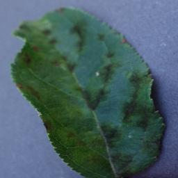
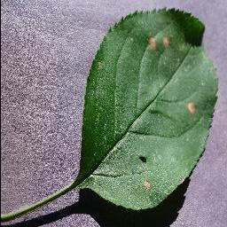

Apple Disease Prevention
Welcome to the Apple Disease Prevention website. Here you can find information on how to prevent common apple diseases such as apple scab, apple cedar rust, and apple black rot.
Welcome to the Apple Disease Prevention website. Here you can find information on how to prevent common apple diseases such as apple scab, apple cedar rust, and apple black rot.
| Image | Link |
|---|---|
|  | Apple_Scab |
|  | Apple_BlackRot |
 |
Apple_CedarRust |